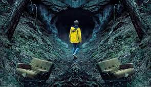
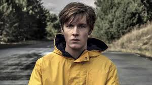

Sinopsis Dark

En la ciudad de Winden comienzan a desaparecer niños, sacando a la luz las relaciones fracturadas, vidas dobles y el pasado oscuro de cuatro familias que viven allí, y revelando un misterio que abarca cuatro generaciones. La historia comienza en 2019, pero se extiende a través del viaje en el tiempo para incluir argumentos en 1986 y 1953, a medida que ciertos personajes de las familias principales de la serie se dan cuenta de la existencia de un agujero de gusano en las cuevas situadas debajo de la central nuclear local, dirigida por la influyente familia Tiedemann. Durante la primera temporada, comienzan a revelarse secretos sobre las familias Kahnwald, Nielsen, Doppler y Tiedemann, y sus vidas comienzan a desmoronarse a medida que los lazos entre los niños desaparecidos y las historias de la ciudad y sus ciudadanos se hacen evidentes.En la segunda temporada continúan los intentos de las familias entrelazadas de reunirse con sus seres queridos desaparecidos, varios meses después del final de la primera temporada, en 2020, 1987 y 1954, respectivamente. Historias adicionales ambientadas en 2053 y 1921 aportan nuevos aspectos a los misterios, y se explora la comunidad secreta Sic Mundus, una fuerza importante en una batalla subyacente por el destino final de la gente de Winden, a medida que la temporada avanza hacia el apocalipsis: la destrucción de Winden y la muerte de muchos de sus habitantes. La tercera temporada sigue los eventos que suceden inmediatamente después del apocalipsis en Winden, las historias del pasado y futuro, y la introducción de otro mundo, desvelándose el origen del bucle. También hay historias adicionales ambientadas en 1888.
Claudia explica a Adam que tanto su mundo, que sería en el que hemos pasado la mayor parte las dos temporadas previas) como el mundo de Eva (que se introdujo en la tercera) nunca deberían haber existido. Y aquí viene uno de los conceptos clave que se deben desarrollar con la información que se nos ha ido dosificando. El famoso nudo es común el mundo de Adam y el de Eva, en el cual Jonas Kahnwald no existe, y es de donde sale la Martha con cicatriz que vimos al final de la segunda temporada. Es decir, tenemos en principio dos realidades alternativas.
